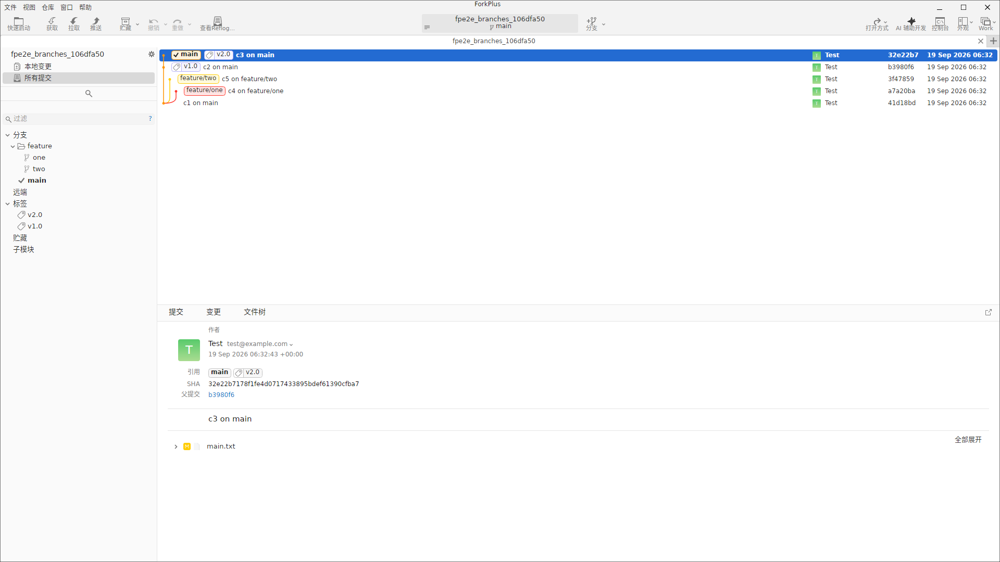
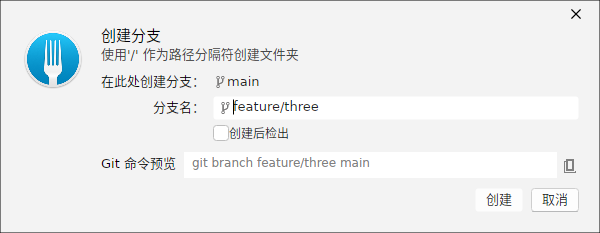
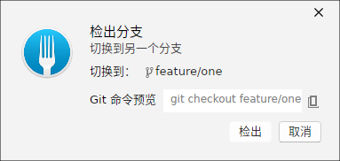
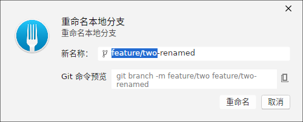
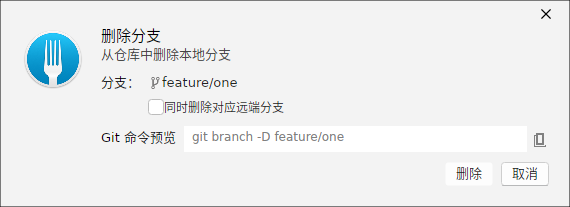
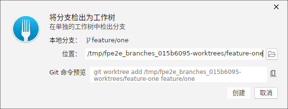
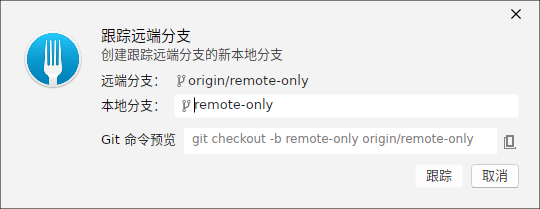
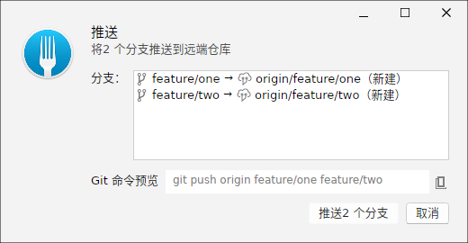

分支列表总览
打开仓库后，会在侧边栏/提交图区域展示当前仓库的全部分支。主界面会标注当前检出的活跃分支、每个本地分支指向的提交，以及工作区状态，方便你快速掌握仓库拓扑。

本示例仓库包含 main 与两条特性分支（feature/one、feature/two），分别含各自的独立提交。你可以在一个启动的对话框中创建、检出、重命名或删除分支。
创建分支
在「新建分支」对话框中输入合法的分支名，即可基于当前活跃分支创建新分支。输入名称时，对话框底部会实时预览将要执行的 git 命令。

<branch-name> 展示命令骨架。你也可以选择是否在创建后立即检出该分支。检出分支
「检出分支」对话框列出可以切换的目标分支。选定后点击确定，工作区将检出到目标分支。切换前请确保没有会阻塞检出的未提交改动。

重命名分支
「重命名本地分支」对话框允许你为已有分支换一个新名字。输入新名后会即时预览 git branch -m 命令，确认后执行重命名。

删除本地分支
「删除本地分支」对话框以列表形式展示可选分支。你可以勾选一个或多个分支进行删除，并决定是否同时删除对应的远程分支。如果分支有未合并的提交，删除前需要确认强制删除。

检测分支为 Worktree
除了在主工作区检出分支，你还可以把某个分支「检出为 Worktree」——在独立目录中检出该分支，实现并行开发互不干扰。对话框会自动派生一个合法的落地路径，也可自行调整。

git worktree add跟踪远程分支
当远程出现了本地不存在的新分支时，可选中该远程分支并「跟踪」它——在本地创建对应分支并建立上下游关系（--track/--set-upstream），之后 fetch/pull/push 都会默认处理该分支。

推送多个分支
「推送多分支」对话框集中列出可推送的本地分支并预选目标远程。你可以一次性选择多个分支推送到远程（写远端的同一个 origin），并预览对应的 git push 命令。
